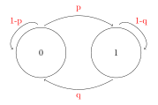

4 Cadeias de Markov
Diremos que um PE {X(t), t \(\in\) T} satisfaz a propriedade markoviana (PM) se:
\[P(X(t_{n+1}) \leq | X(t_1) = x_1,...,X(t_n)=x_n) = P(X(t_{n+1}) \leq X_{n+1} | X(t_n) = x_n)\]
Isso significa que a probabilidade condicional não leva em consideração o que ocorreu antes do instante \(t_n\) para calcular a probabilidade no instante \(t_n + 1\)_
4.1 Caso particular
No caso particular em que as VA’s X(t) são DISCRETAS a propriedade markoviana (PM) fica:
\[P(\underbrace{X_{n+1}}_{\text{Variável aleátoria}} = \underbrace{x_{n+1}}_{\text{número real}}| X_1 = x_1,...,X_n=x_n) = P(X_{n+1} = X_{n+1}| X_n = x_n)\]
Nesse caso, o processo {\(X_n\), n \(\geq\) 1} é chamado de cadeia de markov.
Algunas autores resumem essa propriedade dizendo que:
O futuro do processo depende somente do presente e não do passado. (ou instante mais recente)
Exemplo 4.1 No caso do experimento de jgoar uma moeda, seja \(G_n\) o capital do jogador no instante n:
{\(G_n\) n \(\geq\) 0} é um PE, discreto a tempo discreto.
S = {-20,-19,…,27,28} -> espaço de resultados possíveis
T = {0,1,2,…,24}
(Vamos sempre supor que essa probabilidade independe de m, ou seja, a CM é homogenea)
Exemplo 4.2 (CADEIA DE MARKOV DE 2 ESTADOS) Suponha que uma máquina, em um dia qualquer, pode estar quebrada ou operando. Assuma que se ela esta quebrada no inicio do n-eisimo dia, a probabilidade ser consertada e estar operando no dia SEGUINTE é p.
Por outro lado, se a máquina estiver funcionando no n-esimo dia, a probabilidade dela quebrar e não estar funcionando no dia seguinte é q.
Vamos assumir que as probabilidades condicionais para o n-esimo dia depende apenas do estado do dia anterior.
Seja \(\prod_0(0)\) a probabilidade da máquina estar quebrada no instante inicial e \(\prod(0)(1)\) a probabilidade de estar funcionando no instante inicial.
Temos então que:
\[ X_n \left\{\begin{matrix} 0 &, \text{ se a maq. esta quebrada no dia n} \\ 1 &, \text{ se a maq esta funcionando no dia n} \end{matrix}\right. \]

Ou seja,
\(P(0,1) = P(X_{n+1}=1|X_n=0) =p\)
\(P(1,0) = P(X_{n+1}=0|X_n=1) =q\)
\(P(0,0) = P(X_{n+1} =0|X_n=0)=1-p\)
\(P(1,1) = P(X_{n+1}=1|X_n=1)=1-q\)
4.2 Distribuição do Processo
Antes de fazermos a distribuição do processo lembramos que:
PROBABILIDADE CONDICIONAL
\[P(X=x,Y=y) = P(Y=y|X=x)P(X=x)\]
\[\begin{equation} \begin{split} P(X_{n+1}=0) &= P(X_{n+1}=0,X_{n}=0) + P(X_{n+1}=0,X_n=1) \\ &= P(X_{n+1}=0|X_n = 0)P(X_n=0) + P(X_{n+1}=0|X_n = 1)P(X_n=1)\\ &= (1-p)P(X_n=0) + qP(X_n=1) \text{ // observe que }P(X_n=1)=1 - P(X_n=0)\\ &= (1-p)P(X_n=0)+ q(1-P(X_n=0))\\ &= (1-p-q)P(X_n=0) + q \end{split} \end{equation}\]seja n = 0
\[\begin{equation} \begin{split} P(X_1=0) &= (1-p-q)\overbrace{P(X_0=0)}^{\prod_0(0)} + q\\ &=(1-p-q)\prod_0(0) + q \end{split} \end{equation}\]Seja n = 1
\[\begin{equation} \begin{split} P(X_2=0)&=(1-p-q)P(X_1=0) + q \text{ // utilizando o resultado anterior}\\ &= (1-p-q)[(1-p-q)\prod_0(0) + q] + q\\ &= (1-p-q)^2 \prod_0(0) + (1-p-q)q + q\\ &= (1-p-q)^2\prod_0(0) + q(1-p-q + 1) \end{split} \end{equation}\]Seja n = 2
\[\begin{equation} \begin{split} P(X_3=0)&=(1-p-q)P(X_2=0) + q \text{ // utilizando o resultado anterior}\\ &= (1-p-q)[(1-p-q)^2\prod_0(0) + (1-p-q)q + q] + q\\ &= (1-p-q)^3 \prod_0(0) + (1-p-q)q + (1-p-q)^2q + q\\ &= (1-p-q)^3 \prod_0(0) + q(1 + (1-p-q) + (1-p-q)^2) \end{split} \end{equation}\]Forma geral
\[P(X_n=0)=(1-p-q)^2\prod_0(0) + q \sum_{j=0}^{n-1}(1-p-q)^j\]
Vamos supor que p + q > 0 logo:
PROGRESSÃO GEOMETRICA
\[\sum_{j=0}^{n-1} r^j = \frac{1-r^m}{1-r}\]
No nosso caso:
\[\sum_{j=0}^{n-1} (1-p-q)^j = \frac{1-(1-p-q)^n}{p+q}\]
Finalmente
\[P(X_n=0)= \frac{q}{p+q} + (1-p-q)^n[\prod_0(0) - \frac{q}{p+q}]\]
\[P(X_n=1)= \frac{p}{p+q} + (1-p-q)^n[\prod_0(1) - \frac{p}{p+q}]\]
OBS:
Distribuição limite
\[\underset{n \to \infty}{lim} P(X_n=0) = \frac{q}{p+q}\]
\[\underset{n \to \infty}{lim} P(X_n=1) = \frac{p}{p+q}\]
4.3 Forma matricial
Temos conhecido as probabilidades:
\[P(X_{n+1} = 1| X_n = 0) = P(0,1) = p\]
\[P(X_{n+1}|X_n=1) = P(1,0) = q\]
Podemos colocar essas probabilidades na forma de uma matriz.
\[\begin{equation} P = \begin{bmatrix} P(0,0) & P(0,1) \\ P(1,0) & P(1,1) \end{bmatrix} = \begin{bmatrix} 1-p & p \\ q & 1-q \end{bmatrix} \end{equation}\]A matriz P será chamada de matriz de transição de um passo.
Carácteristicas da Matriz:
Matriz quadrada
- Matriz estocástica
significa que a soma das linhas é igual a 1.
4.4 Espaços de estados
Seja {\(X_n\), n \(\geq\) 0} uma CM com \(\overbrace{\text{espaços de estados}}^{\text{o 'passo'}}\) S definimos a função de transição a 1 passo como P(x,y)=P(\(X_{n+1}\)=y|\(X_n\)=n).
Notar que P(x,y) é uma distribuição de probabilidade pois \(P(x,y) \geq 0\) e \(\underbrace{\sum_{y \in S} P(x,y) = 1}_{\text{soma das linhas}}, x \in S\)
A função \(\prod_0(x)\), x \(\in\) S, definido por \(\prod_0(x)=P(X_0=x), x \in S\) é chamada de distribuição inicial do CM.
Também, \(\prod_0(x) \geq 0\) e \(\sum_{x \in S}\underbrace{\prod_0(x_i)}_{\text{instante inicial}}=1\).
Pode ser provado que a distribuição da cadeia em qualquer instante fica completamente determinado pelo conhecimento das probabilidades de transição e pela distribuição normal.
Da mesma forma \(P(X_0=x_0,X_1=x_1,X_2=x_2)\)
\[\begin{equation} \begin{split} P(\overbrace{X_0=x_0,X_1=x_1}^{A},\overbrace{X_2=x_2}^{B}) &= P(X_2 = x_2 | X_0 = x_0, X_1 = x_1) P(X_1=x_1|X_0=x_0) P(X_0=x_0)\\ &= P(X_2 = x_2, X_1 = x_1) P(x_0,x_1)\prod_0(x_0) \text{\\ corta-se } X_0 \text{ por que é uma CM}\\ &= \prod_0(x_0) P(x_0,x_1) P(x_1,x_2) \end{split} \end{equation}\]4.4 Fórmula geral
Em geral, a distribuição da cadeia vai ser:
\[P(X_0 = x_0, X_1 = x_1,...,X_n=x_n) = \prod_0(x_0) P(x_0,x_1) P(x_1,x_2) ... P(x_{n-1},x_{n})\](#exm:Exemplo da máquina) No exemplo da máquina que queremos calcular a probabilidade da máquina estar funcionando hoje e estar funcionando ainda depois de amanhã. Ou seja, precisamos calcular:
\[\begin{equation} \begin{split} P(X_{n+2} = 1| X_n=1) &= P(1,0) \* P(0,1) + P(1,1) \* P(1,1)\\ &= qp + (1-q)(1-q)\\ &=pq + (1-q)^2 \end{split} \end{equation}\]As probabilidades de transição a n-passos podem ser facilmente obtidas pela matriz \(P^n\) sendo:
\[P^n = p*p*...*p\]
No exemplo:
\[\begin{equation} P^2 = \begin{bmatrix} 1-p & p \\ q & 1-q \end{bmatrix} \begin{bmatrix} 1-p & p \\ q & 1-q \end{bmatrix} = \begin{bmatrix} (1-p)^2 +pq & (1-p)p + (1-q)p \\ q(1-p) + q(1-q) & pq + (1-q)^2 \end{bmatrix} \end{equation}\]Em resumo, a função de transição a n-passos \(P^n(x,y)\) é definida por:
\[P^n(x,y)= \sum_{y_1} ... \sum_{y_{n-1}} P(x_1,y_1) P(y_1,y_2) ... P(y_{n-1},y_n)\](#prp:Fórmula de CHAPMAN-KOLMOGOROV) \[P^{n+m}(x,y) = \sum_z P^n(x,z) P^m(z,y)\]
Para uma CM com espaços de estados finitos a matriz \(P^n\) será uma matriz finita.
Notar que a:
\[\begin{equation} \begin{split} P(X_n=y) &= \sum_{x \in S} P(X_0=x,X_n=y)\\ &= \sum_{x \in S} \overbrace{P(X_n=y|X_0=x)}^{P^n} \overbrace{P(X_0=x_0)}^{\prod_0(x)}\\ &= \sum_{x \in S} \prod_0(x) P^n(x,y). \end{split} \end{equation}\]Matricialmente, \(\prod_n=\prod_0P^n\)
sendo que \(\prod_n\) é a distribuição de \(X_n\)